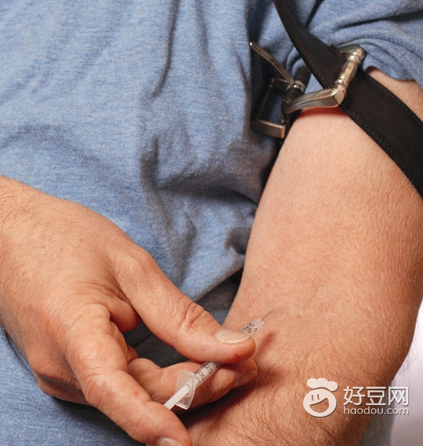

【糖尿病】胰岛素：简化流程“针”重要
2014-05-08 14:53:42
根据一项涉及全球16个国家、171个中心的研究结果显示，我国只有不到一成的患者掌握了正确的胰岛素注射技术，这导致我国使用胰岛素治疗的患者中只有37%血糖达标。

来源：《大众健康》
文：本刊记者 栾兆琳
对于胰岛素注射这个话题，中华医学会糖尿病学分会常委、北京大学第一医院内分泌科主任郭晓蕙与中华医学会糖尿病学分会副主任委员、解放军总医院内分泌科主任陆菊明进行了深入的剖析与讲解。注射胰岛素：必须掌握的技术郭晓蕙主任说，我国的糖尿病患者约有50%在治疗时需要注射胰岛素，有的是和口服药合用的，有的是单独使用胰岛素的。但是在这些患者当中，其实不到10%的人是真正正确掌握注射技术的。陆菊明认为，胰岛素注射不是一件小事，是一件大事，因为糖尿病人能否正确按照规定注射，对注射后的效果影响很大。他说：“这就好比开车一样，有了车，技术不行，那就开不好。也好比像现在我们的部队，有了好的武器，但是不会操作，这个武器也没用。所以掌握胰岛素注射技术是非常重要的，而且要熟练的掌握，每次注射都能够完全按照要求来做，那糖尿病人的收益就会很大。”重复用“针” 真成问题“注射部位轮换不规范、重复使用注射笔用针头、注射手法错误以及患者教育的缺失是目前胰岛素注射中存在的普遍问题。”陆菊明教授指出，“以注射笔用针头为例，目前市场上的胰岛素笔用针头和胰岛素注射器都是按照一次性使用的标准设计制造的，胰岛素注射治疗中，应保证胰岛素笔用针头和胰岛素注射器一次一换。重复使用会影响注射胰岛素剂量的精确性，并导致皮下脂肪增生和硬结的产生，从而影响胰岛素的吸收。为什么重复使用针头会影响胰岛素剂量的精确性呢？陆菊明解释说：“很多人因为嫌麻烦，在注射以后，不把针头从笔上拔下来，这样，外界的空气就会直接和注射器有交流，这个时候如果压力不正常，可能一些胰岛素就漏出去了。因为胰岛素是短效的，是可溶解的那种，沉淀留在这儿，结果比例就不正常了，剂量就不准确了，再加上有的时候会有气泡等等这些问题。”专家强调，注射胰岛素时，一定要做到打一次更换一次针头。简化流程“针”重要专家介绍，胰岛素规范注射的九步骤如下：1. 注射前洗手。2. 核对胰岛素类型和注射剂量。3. 安装胰岛素笔芯。4. 预混胰岛素需充分混匀，5. 安装胰岛素注射笔用针头6. 要检查注射部位和消毒。7. 根据胰岛素注射笔用针头的长度明确是否需要捏皮以及进针的角度。绝大多数成人4mm或5mm针头无需捏皮垂直进针即可。8. 注射完毕以后，针头滞留至少10秒后再拔出。9. 注射完成后立即戴上外针帽将针头从注射笔上取下，丢弃在加盖的硬壳容器中。陆教授说，“现在的胰岛素规范注射技术的这9个步骤中，注射时正确捏皮的方法以及进针的角度，是很多患者在实际操作中最容易出现错误的环节。如果选择目前广泛使用的4mm或5mm超细超短型的针头，在注射时几乎无疼痛感，注射时大多数情况下无需捏起皮肤，单手操作即可。这将使规范注射流程进一步简化，在方便糖尿病患者的同时，也使注射更准确、更安全、更舒适，客观上为不断提高糖尿病患者的依从性和规范操作性提供了基础。”而这九个步骤中有的流程是绝对不能简的。郭晓蕙主任介绍说，比如像注射前洗手，必须得洗，这是不能简的。再如像安装注射笔，这个也得安，每次都得安。所以目前来说，简化的步骤就只有4毫米针头后不必必须捏皮这一项。一个标准体重的人，在腹部注射，基本上不用捏皮，直接针一扎就行了。过去曾经出现过无针头的注射，但是无针头的注射也有好多问题，仍然有疼痛，而且注射笔的价格特别昂贵，大概一万多块钱，后来就销声匿迹了。规范注射 细节一个都不落除了换针头和腹部注射这些小细节，专家们还介绍了几个在胰岛素注射时必须要注意到的地方。首先，核对类型和注射剂量。很多人比较注意核对注射剂量，核对注射类型有的人比较少。核对内容要养成习惯。其次，注射前充分混匀。再次，注射结束后，至少停留10秒再拔出。第四，注射完成后，将针头从注射笔上取下，立即戴上外针帽。这个步骤好些人做得不对。有的人不取，套上外针帽就放在冰箱里了。还有的人用小针帽去套（注射笔出厂的时候有一个小针帽，有一个大针帽），有时手一哆嗦，结果把手扎伤了，或者把针头干脆弄弯了，弄折了。还有的人不拔掉针头，直接套在笔上。第五，轮换注射部位。第六，废弃针头的处理。多数人随便就将针头扔了，其实对咱们的环境，对他人的健康，都是有影响的。把针头从笔上拔下来以后，最好有一个毁形，这里需要一个特殊装置，毁形器，把针头给剪断。目前我们还没有这个条件，所以介绍给大家一个小办法，就是将废弃的针头积攒在空矿泉水瓶子里。瓶子口很小，把针头扔进去以后，一般就很难再倒出来了，收集一满瓶以后就交给护士带到医院去，这样对自己也不损伤，也不会损伤他人。各大医院都有集中处理医疗垃圾的机制。